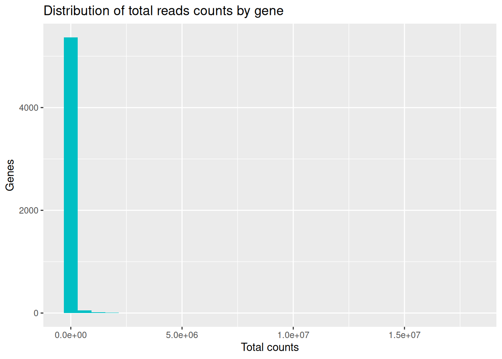
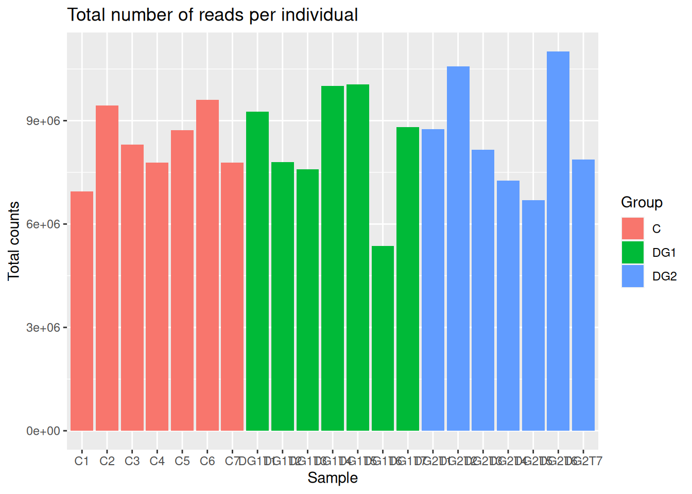
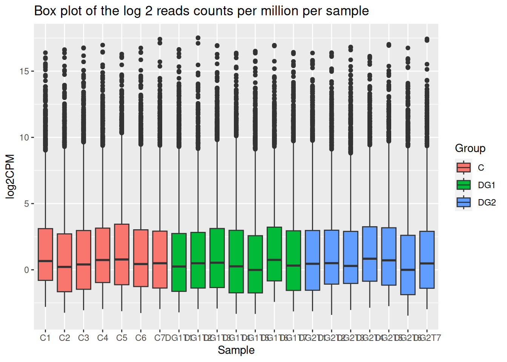
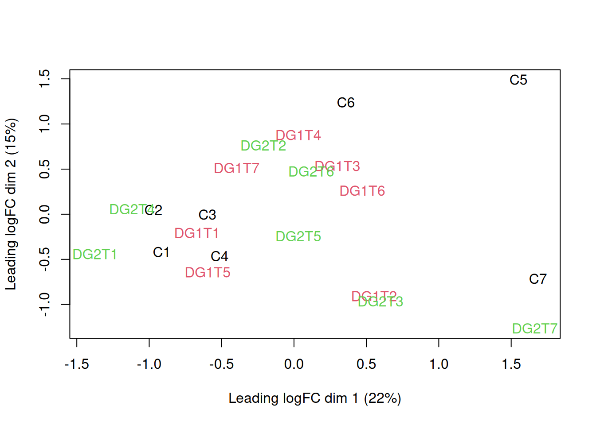

Descriptive statistics of read counts
Distribution of total reads counts by gene

| Var1 | Freq |
|---|---|
| [0,20] | 981 |
| (20,Inf] | 4466 |
| C | DG1 | DG2 | |
|---|---|---|---|
| [0,10] | 1338 | 1636 | 1500 |
| (10,Inf] | 4109 | 3811 | 3947 |
Filter genes with low expression
We are going to filter genes with more than 1 reads per million in at least 7 individuals.
Number of genes removed: 3065
Reads counts summary
| Group | Id | Total counts |
|---|---|---|
| C | C1 | 6946249 |
| C | C2 | 9443837 |
| C | C3 | 8307870 |
| C | C4 | 7779359 |
| C | C5 | 8717672 |
| C | C6 | 9601832 |
| C | C7 | 7789549 |
| DG1 | DG1T1 | 9263689 |
| DG1 | DG1T2 | 7797576 |
| DG1 | DG1T3 | 7588203 |
| DG1 | DG1T4 | 10006239 |
| DG1 | DG1T5 | 10056498 |
| DG1 | DG1T6 | 5357884 |
| DG1 | DG1T7 | 8813195 |
| DG2 | DG2T1 | 8746669 |
| DG2 | DG2T2 | 10568886 |
| DG2 | DG2T3 | 8161995 |
| DG2 | DG2T4 | 7266797 |
| DG2 | DG2T5 | 6692811 |
| DG2 | DG2T6 | 11007564 |
| DG2 | DG2T7 | 7869289 |

Reads distributions per individual

Hierarchical clustering
Multidimensional scaling
